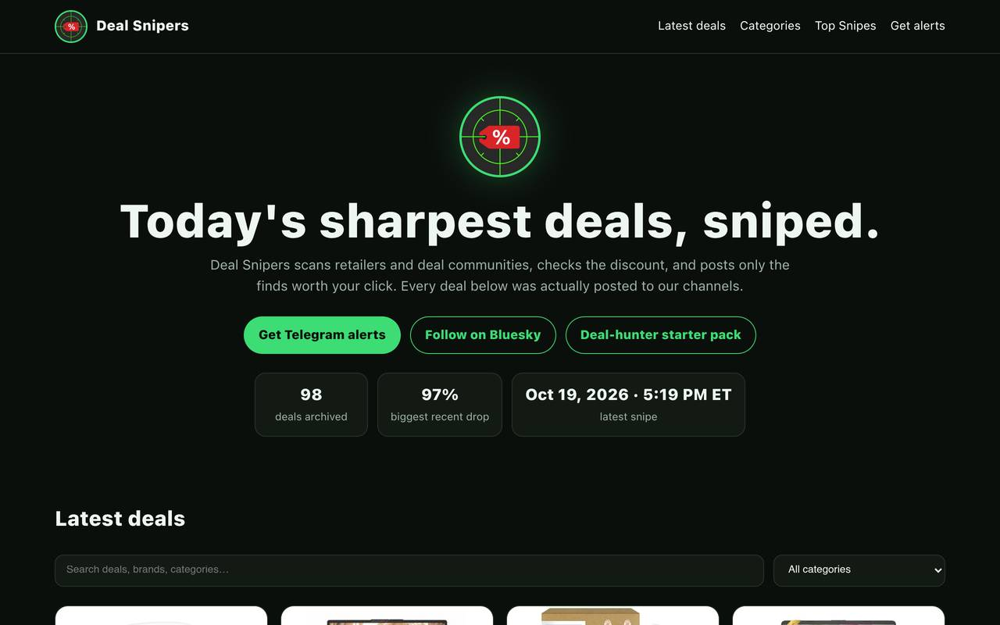

EXP-06
Deal Snipers
A multi-agent system that hunts deep discounts, verifies them, and posts the real ones automatically.
LIVE PIPELINE

BUILT
Agents scan retailers for deep discounts, verify each candidate against price history so only real deals pass, then post with hype copy, product images, and my affiliate tag to an X bot through the official API. The system also watches rival deal accounts as a signal source. Revenue is the Amazon 24-hour affiliate cookie on posted deals.
WHAT BROKE
The expensive lesson was scheduling. The pipeline first ran on agent crons, which burn model budget on every fire whether anything changed or not. Recurring deterministic work now runs on systemd timers at zero model cost, and that rule now applies to every pipeline I run.
HOW I JUDGE IT
A deal posts only if the price-history check passes. A fake discount is worse than a missed deal, because the account’s only asset is that followers trust the posts.
RESULTS
Live and posting on schedule with no ongoing effort from me.
FOR DAREK TO ANSWER
Audience and revenue: follower count and affiliate revenue when there is something to report.